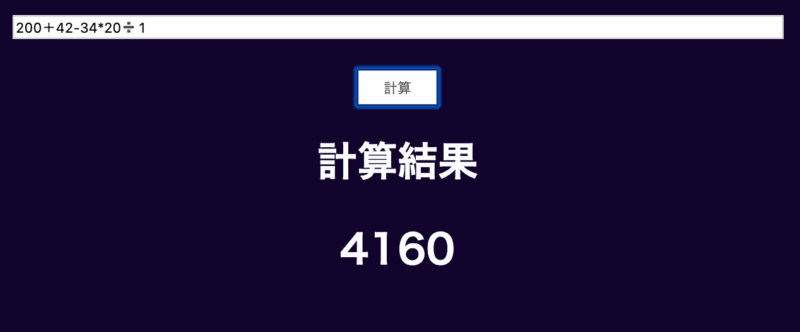

Unity
簡単なアクションゲーなら苦戦せずに作れる(はず)
3~4年ぐらいやっている
html5、css、javascript

前に一回ボタンからの計算機は作ってたので、textboxから入力する形にしました。
整数の四則演算が出来ます。いろんな記号を使える様にもしました。

動画を見ながらですがなんとか作れました。
その動画で頭身が小さい方が作りやすいと聞いたので、二頭身です。
三面図(設計図みたいな)は、動画の配信者の方が無料で配布してあるのに、
髪型や眉毛、自分でデザインして使いました(もちろん改変OKなやつね)。
服の部分だけ三面図サボってたので、なかなかデザインが決まらず大変でした。
動かせる様にして、色を塗って、アニメーションを作たら完成です。
結構気に入ってます。新しく作るゲームの主人公にする予定です。


まじモンのクソゲーです。全5ステージ収録。とりあえずやりたいことを詰め込みました。
ホーム画面、BGM、クリア画面を最近の私が追加しています。作者の私がクリアできてません。
クリア画面(大したモンじゃないけど)をまともに挑んでみた人はいません多分。
５ステージ目の難易度がまじで異常です。クリアさせる気がありません。というか長すぎる。
やっても、集中力、充電を無限に失わせます。でもやってくれると嬉しいこの矛盾。
ただ、プレイできるのはmacだけです申し訳ない、開き方も難しいですすいません。
開き方は、ダウンロード＆展開したあと、右クリックからの開く。
一回キャンセルしていただいてもう一回右クリック＆開くしていただければ。